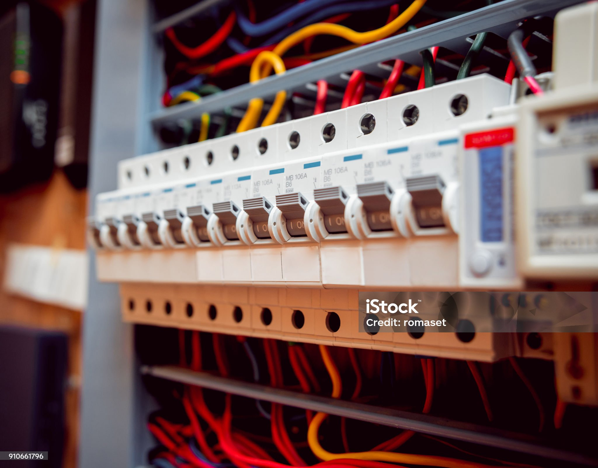
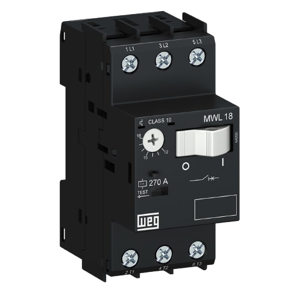
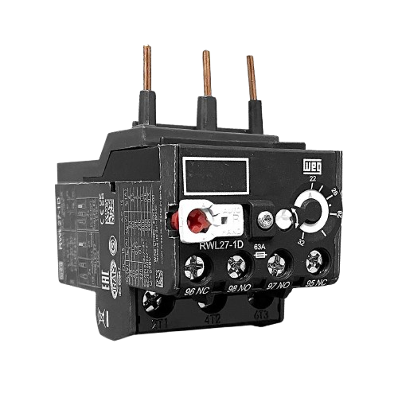
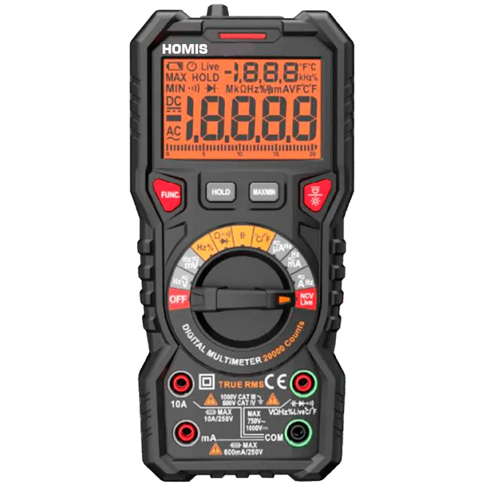

O disjuntor é um dispositivo de proteção elétrica utilizado para interromper automaticamente a passagem de corrente quando ocorre uma sobrecarga ou um curto-circuito. Sua principal função é proteger pessoas, equipamentos e instalações elétricas contra danos causados por falhas no sistema.
Existem diversos tipos de disjuntores, como os termomagnéticos e os diferenciais residuais (DR), cada um destinado a aplicações específicas. Eles são amplamente utilizados em residências, comércios e indústrias.

Ao contrário dos fusíveis, o disjuntor pode ser rearmado após a correção da falha, sem necessidade de substituição.
Vídeo explicando o funcionamento e os tipos de disjuntores.
O disjuntor motor é um equipamento de proteção específico para motores elétricos. Ele protege contra sobrecargas, curtos-circuitos e falta de fase.
Além da proteção, também pode ser utilizado para ligar e desligar motores manualmente.

O ajuste da corrente de atuação pode ser configurado conforme as características do motor protegido.
Vídeo demonstrando a regulagem do disjuntor motor.
O relé térmico é um dispositivo utilizado para proteger motores elétricos contra sobrecargas prolongadas. Seu funcionamento baseia-se na deformação de lâminas bimetálicas aquecidas pela corrente elétrica.
Quando a corrente ultrapassa o valor ajustado durante determinado período, o relé interrompe o circuito de comando do motor.

O relé térmico normalmente trabalha em conjunto com um contator para realizar a proteção completa do motor.
Vídeo explicando o funcionamento e ajuste do relé térmico.
O multímetro é um instrumento utilizado para medir diversas grandezas elétricas, como tensão, corrente e resistência. Ele é uma ferramenta indispensável para eletricistas, técnicos e engenheiros.
Os modelos digitais são os mais utilizados atualmente devido à sua precisão e facilidade de leitura.

Alguns multímetros modernos também medem frequência, temperatura e capacitância.
Vídeo ensinando como utilizar um multímetro digital.